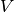

seapy.components.component.Component¶
- class seapy.components.component.Component(name, system, **properties)[source]¶
Bases: seapy.base.Base
Abstract Base Class for components.
- __init__(name, system, **properties)[source]¶
Constructor.
Parameters: - name (string) – Identifier
- system (seapy.system.System) – System
- component (seapy.components.component) – Component
Methods
__init__(name, system, **properties) Constructor. Component.df disable([subsystems]) Disable this component. enable([subsystems]) Enable this coupling. info([attributes]) Return dataframe. plot(quantity[, yscale]) Plot quantity. Attributes
SORT str(object=’‘) -> str SUBSYSTEMS dict() -> new empty dictionary classname Name of class of the object. enabled Switch indicating whether the object is enabled. frequency Frequency. height float(x) -> floating point number included Indicates whether the object is included in the analysis. length float(x) -> floating point number linked_junctions linked_subsystems mass Mass  of the component.
of the component.material name volume Volume  of the component. width float(x) -> floating point number - SUBSYSTEMS = {}¶
Dictionary with systems that are available for this component. By default each of these subsystems is added to the component.
- __init__(name, system, **properties)[source]
Constructor.
Parameters: - name (string) – Identifier
- system (seapy.system.System) – System
- component (seapy.components.component) – Component
- disable(subsystems=False)[source]¶
Disable this component. Optionally disable components’ subsystems.
Parameters: subsystems (bool) – Disable subsystems
- enable(subsystems=False)[source]¶
Enable this coupling. Optionally enable components’ subsystems.
Parameters: subsystems (bool) – Enable subsystems
- height = 0.0¶
Height.
- length = 0.0¶
Length.
- linked_junctions = <generator object __get__ at 0x7f6dee272708>¶
junctions this component is part of.
- linked_subsystems = <generator object __get__ at 0x7f6dee2728b8>¶
Subsystems.
- material = None¶
Material which this component consists of.
- width = 0.0¶
Width.